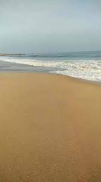

 Rasthacad beach is located at Anjugramam village in Kanyakumari district of Tamilnadu.This beach is unknown to most of the tourists visiting Kanyakumari district.It is one of the top rated place listed as beach in Agastheeswaram.
6am to 6pm
Carry water bottle
No shops nearby about 3kms